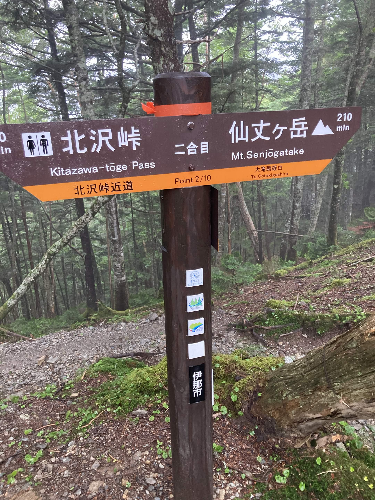
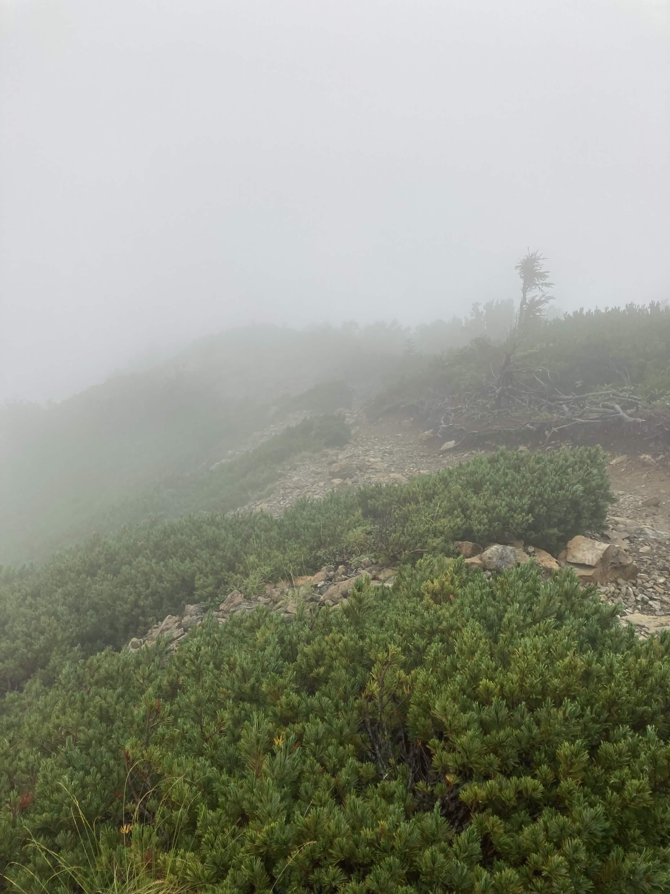
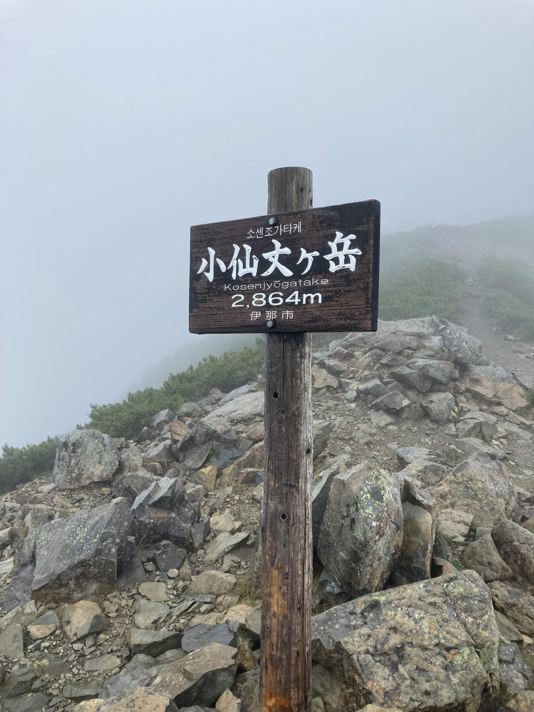

南アルプス
【南アルプス】初めての南アルプスと台風の洗礼！小仙丈ケ岳撤退の記録
山行日: 2023.08.15

北沢峠から森林限界を目指して登り進むルート
山行データ＆評価
| 日程 |
2023年8月15日（登頂・撤退） |
| メンバー |
ソロ（なし） |
| 難易度（俺流10段階） |
技術力 2 / 体力度 3 |
| アクセスコース目安 |
・北沢峠 → 小仙丈ケ岳：約2時間
|
装備＆ギア
- バックパック： 35Lザック
- 水・食料： 水3L、行動食それなりに
- その他： 雨具、防寒着、日帰り基本装備など

森林限界を抜けると台風接近に伴う強い風雨に包まれた
山行記録＆ポイントまとめ
自分自身にとって「初めての南アルプス」であり、日本アルプスとしては通算2エリア目への挑戦となった山行です。
- 台風接近による暴風雨： 登るにつれて天候が悪化し、稜線上では強い風雨に見舞われる過酷なコンディションとなりました。
- 安全を最優先にした撤退判断： 仙丈ヶ岳本峰を目指す予定でしたが、暴風雨の影響を考慮し小仙丈ケ岳の時点で引き返す判断を下しました。

小仙丈ケ岳ピーク。無念の撤退となったが貴重な経験となった
振り返りと次回への目標
山頂に届かなかった悔しさは残るものの、悪天候時のリスク管理や撤退の判断基準を学ぶ重要な機会となりました。この経験をこれからの登山の糧にし、次回は天候に恵まれたタイミングで必ず仙丈ヶ岳本峰リベンジを果たしたいと思います！
← HOMEへ戻る